Choose any three.
|
|
SQLite中的原子提交
Atomic Commit In SQLite
1.0 简介
1.0 Introduction
类似SQLite这种事务数据库中一个很重要的特性是“原子提交”。
原子提交意味着一个事务中的所有数据库改动要么全执行要门全都不执行。
An important feature of transactional databases like SQLite
is "atomic commit". 在源自提交中，就好像是数据库文件中许多不同位置的不同写入在同一时刻一起执行了一样。实际上，硬件将写入大容量存储器的数据串行化，每写入一个扇区都需要花费一定时间。所以同时将许多不同的扇区一起写入数据库文件时不可能的事情。但是，SQLite中的原子提交逻辑使这看起来就像是事务中的所有改动同时写入了一样。
Atomic commit means that either all database changes within a single
transaction occur or none of them occur. With atomic commit, it
is as if many different writes to different sections of the database
file occur instantaneously and simultaneously.
Real hardware serializes writes to mass storage, and writing
a single sector takes a finite amount of time.
So it is impossible to truly write many different sectors of a
database file simultaneously and/or instantaneously.
But the atomic commit logic within
SQLite makes it appear as if the changes for a transaction
are all written instantaneously and simultaneously.
SQLite提供了这个重要的特性，即使是事务被操作系统崩溃或者断电打断，也可以使事务表现的像是原子的。
SQLite has the important property that transactions appear
to be atomic even if the transaction is interrupted by an
operating system crash or power failure.
这篇文档讲解了SQLite是创造原子提交假象所用到的技术。
This article describes the techniques used by SQLite to create the
illusion of atomic commit.
这篇文档中的内容只适用于“回滚日志”模式的SQLite，也就是说SQLite不能使用WAL。SQLite中启用WAL也一样能支持原子提交，只是使用了与本文内容不同的机制来实现的原子提交。在WAL下SQLite是如何支持原子提交的相关内容参见WAL文档。
The information in this article applies only when SQLite is operating
in "rollback mode", or in other words when SQLite is not
using a write-ahead log. SQLite still supports atomic commit when
write-ahead logging is enabled, but it accomplishes atomic commit by
a different mechanism from the one described in this article. See
the write-ahead log documentation for additional information on how
SQLite supports atomic commit in that context.
2.0 硬件假设
2.0 Hardware Assumptions
纵观全文，我们将大容量存储设备称作“磁盘”，即使大容量存储器实际上可能是闪存设备。
Throughout this article, we will call the mass storage device "disk"
even though the mass storage device might really be flash memory.
我们假定磁盘是按块写入的，这个块我们叫做“扇区”。在磁盘上不可能只修改小于一个扇区的内容。想要修改磁盘上小于一个扇区的内容，那么只能先读取包含想要修改的内容的整个扇区，然后修改内容，最后在写回整个扇区。
We assume that disk is written in chunks which we call a "sector".
It is not possible to modify any part of the disk smaller than a sector.
To change a part of the disk smaller than a sector, you have to read in
the full sector that contains the part you want to change, make the
change, then write back out the complete sector.
在传统的旋转磁盘上，扇区是双向通讯（读取和写入）的最小单位。在闪存设备中，读取的最小尺寸要远小于写入的最小尺寸。SQLite值关心写入的最小数量，因此，在这片文章中，当我们说“扇区”时，我们的意思就是一次写入大容量存储器的最小数据数量。
On a traditional spinning disk, a sector is the minimum unit of transfer
in both directions, both reading and writing. On flash memory, however,
the minimum size of a read is typically much smaller than a minimum write.
SQLite is only concerned with the minimum write amount and so for the
purposes of this article, when we say "sector" we mean the minimum amount
of data that can be written to mass storage in a single go.
在SQLite3.3.14之前，所有的情况下都假设扇区大小为512字节。虽然有一个编译期参数可以修改这个值，但是代码并没有在大数值下测试过。由于到最近为止，所有的磁盘驱动器内部都是使用512字节一个扇区，所以512字节一个扇区的假设看起来是合适的。不过，最近已经下定决心，将磁盘扇区的大小增加到4096字节。另外，闪存设备的扇区大小通常要大于512字节。由于这些原因，从SQLite3.3.14版开始，在OS层接口增加了一个方法，用来查询底层文件系统的真实扇区大小。不过，在目前的实现中（3.5.0版）这个方法只是返回一个硬编码的值512字节。这是因为，在unix和windows上还没有一个标准途径来获取真实的扇区大小。
但是对于嵌入式设备，可以使用这个方法来满足自身需求。并且，我们保留了在未来的Unix和Windows中填入有意义的实现的可能性。
Prior to SQLite version 3.3.14, a sector size of 512 bytes was
assumed in all cases. There was a compile-time option to change
this but the code had never been tested with a larger value. The
512 byte sector assumption seemed reasonable since until very recently
all disk drives used a 512 byte sector internally. However, there
has recently been a push to increase the sector size of disks to
4096 bytes. Also the sector size
for flash memory is usually larger than 512 bytes. For these reasons,
versions of SQLite beginning with 3.3.14 have a method in the OS
interface layer that interrogates the underlying filesystem to find
the true sector size. As currently implemented (version 3.5.0) this
method still returns a hard-coded value of 512 bytes, since there
is no standard way of discovering the true sector size on either
Unix or Windows. But the method is available for embedded device
manufactures to tweak according to their own needs. And we have
left open the possibility of filling in a more meaningful implementation
on Unix and Windows in the future.
SQLite一直假设扇区写入不是原子的。但是SQLite始终假设扇区写入是线性的。“线性”是指SQLite假设在写入一个扇区时，硬件设备是从数据的一端开始，一个字节挨着一个字节的写入，一直写到另一端。写入可能是从头到尾，也可能是从尾到头。如果在写入一个扇区的过程中发生了断电故障，那么可能这一扇区的一部分修改了，而另一部分没有修改。SQLite的一个关键假设是，如果扇区的一部分发生改动，那么要么是第一个字节修改了，要么就是最后一个字节修改了。也就是硬件设备不可能从一个扇区的中间开始朝两端写入。我们并不确定这个假设是否总是正确的，但是这看起来是合理的。
SQLite has traditionally assumed that a sector write is not atomic.
However, SQLite does always assume that a sector write is linear. By "linear"
we mean that SQLite assumes that when writing a sector, the hardware begins
at one end of the data and writes byte by byte until it gets to
the other end. The write might go from beginning to end or from
end to beginning. If a power failure occurs in the middle of a
sector write it might be that part of the sector was modified
and another part was left unchanged. The key assumption by SQLite
is that if any part of the sector gets changed, then either the
first or the last bytes will be changed. So the hardware will
never start writing a sector in the middle and work towards the
ends. We do not know if this assumption is always true but it
seems reasonable.
前一段声明了SQLite没有假设扇区写入是源自的。默认情况是这样的，但是从SQLite3.5.0版开始，增加了一个新接口叫做虚拟文件系统（VFS）接口。VFS是SQLite于底层文件系统通讯的唯一方法。
初始时使用的是为Unix和Windows默认实现的VFS，并且提供了在运行时创建一个新的自定义VFS实现的机制。在这个新VFS接口中有一个方法叫做xDeviceCharacteristics。这个方法查询底层文件系统，找出文件系统提供或没提供的各种属性和行为。xDeviceCharacteristics方法可能会指示扇区写入是原子的。如果做出了这种指示，那么SQLite就会尝试利用这个事实。但是在Unix和Windows环境中默认的xDeviceCharacteristics方法都没有指示原子扇区写入，所以这个优化通常是被忽略的。
The previous paragraph states that SQLite does not assume that
sector writes are atomic. This is true by default. But as of
SQLite version 3.5.0, there is a new interface called the
Virtual File System (VFS) interface. The VFS is the only means
by which SQLite communicates to the underlying filesystem. The
code comes with default VFS implementations for Unix and Windows
and there is a mechanism for creating new custom VFS implementations
at runtime. In this new VFS interface there is a method called
xDeviceCharacteristics. This method interrogates the underlying
filesystem to discover various properties and behaviors that the
filesystem may or may not exhibit. The xDeviceCharacteristics
method might indicate that sector writes are atomic, and if it does
so indicate, SQLite will try to take advantage of that fact. But
the default xDeviceCharacteristics method for both Unix and Windows
does not indicate atomic sector writes and so these optimizations
are normally omitted.
SQLite假设操作系统会缓冲写操作，写请求会在实际存储到大容量存储设备中之前返回。SQLite还进一步假设，写入操作会被操作系统重排。由于这个原因，SQLite会在关键点上执行“flush”或“fsync”操作。SQLite假设flush和fsync会在文件的所有待写入操作全部完成写入之后才返回。不过我们被告知，在一些Windows和Linux版本中，flush和fsync原语被打破了。这是非常遗憾的。这使得SQLite数据库有可能被提交过程中的断电故障损坏。而且SQLite无法测试或修正这个情况。SQLite假设操作系统能够像其广告上说的一样运行。如果这种情况是不完全的，那么只能期望你不会太经常的断电。
SQLite assumes that the operating system will buffer writes and
that a write request will return before data has actually been stored
in the mass storage device.
SQLite further assumes that write operations will be reordered by
the operating system.
For this reason, SQLite does a "flush" or "fsync" operation at key
points. SQLite assumes that the flush or fsync will not return until
all pending write operations for the file that is being flushed have
completed. We are told that the flush and fsync primitives
are broken on some versions of Windows and Linux. This is unfortunate.
It opens SQLite up to the possibility of database corruption following
a power loss in the middle of a commit. However, there is nothing
that SQLite can do to test for or remedy the situation. SQLite
assumes that the operating system that it is running on works as
advertised. If that is not quite the case, well then hopefully you
will not lose power too often.
SQLite假设当文件增长到一定长度时，新分配的文件空间最初内容是未知的，稍后才会填入实际写入的数据。换句话说，也就是SQLite假设文件尺寸的更新时间在写入内容之前。这是一个悲观的假设，为此，SQLite还需要做一些额外的工作来确保在文件尺寸增加了和新数据写入之间发生断电故障时不会导致数据库损坏。VFS的xDeviceCharacteristics方法可能会指示出文件系统会在更新文件尺寸前写入数据（对于读代码的用户来说是SQLITE_IOCAP_SAFE_APPEND属性）。当xDeviceCharacteristics指示出数据写入发生在更新文件尺寸之前时， SQLite就可以放弃一些庞杂的数据库保护步奏，因此而减少完成提交时所需的磁盘I/O数量。
不过，在目前的Windows和Unix版VFS实现中，默认没有这个假设。
SQLite assumes that when a file grows in length that the new
file space originally contains garbage and then later is filled in
with the data actually written. In other words, SQLite assumes that
the file size is updated before the file content. This is a
pessimistic assumption and SQLite has to do some extra work to make
sure that it does not cause database corruption if power is lost
between the time when the file size is increased and when the
new content is written. The xDeviceCharacteristics method of
the VFS might indicate that the filesystem will always write the
data before updating the file size. (This is the
SQLITE_IOCAP_SAFE_APPEND property for those readers who are looking
at the code.) When the xDeviceCharacteristics method indicates
that files content is written before the file size is increased,
SQLite can forego some of its pedantic database protection steps
and thereby decrease the amount of disk I/O needed to perform a
commit. The current implementation, however, makes no such assumptions
for the default VFSes for Windows and Unix.
SQLite假设在用户进程来看文件删除是原子的。这也就是说，如果SQLite请求删除一个文件，且在删除过程中发生断电故障，那么当电力恢复时，这个文件要么依然存在于文件系统中且所有内容都还在，要么在文件系统中不可见。如果在电力恢复后发现文件只删除了一部分，或者一部分数据被更新或删除，或者文件被截短，而没有完全删除，那么数据库很可能会出现错误。
SQLite assumes that a file deletion is atomic from the
point of view of a user process. By this we mean that if SQLite
requests that a file be deleted and the power is lost during the
delete operation, once power is restored either the file will
exist completely with all if its original content unaltered, or
else the file will not be seen in the filesystem at all. If
after power is restored the file is only partially deleted,
if some of its data has been altered or erased,
or the file has been truncated but not completely removed, then
database corruption will likely result.
SQLite假设因宇宙射线、热噪声、量子波动、设备驱动bug或者其它机制引起的比特位错误的探测和修正是底层硬件和操作系统的责任。SQLite不会为了检测错误或I/O异常而在数据库文件中加入任何冗余内容。SQLite假设读取到的数据一定和之前写入的内容一致。
SQLite assumes that the detection and/or correction of
bit errors caused by cosmic rays, thermal noise, quantum
fluctuations, device driver bugs, or other mechanisms, is the
responsibility of the underlying hardware and operating system.
SQLite does not add any redundancy to the database file for
the purpose of detecting corruption or I/O errors.
SQLite assumes that the data it reads is exactly the same data
that it previously wrote.
默认情况，SQLite假设调用操作系统写入一段字节不会破坏或更改这段内容之外的任何字节，即使在写入时发生断电或者系统崩溃也不会。我们称之为"powersafe overwrite"性质。在SQLite3.7.9版之前并没有假设powersafe overwrite。但是随着多数磁盘驱动器将标准扇区大小从512字节增加到4096字节，假设powersafe overwrite变得非常必要，这是因为要维持历史版本的性能水平，所以在最近的SQLite版本中默认会假设powersafe overwrite。如果需要，可以再编译期或者运行时禁用powersafe overwrite性质假设。更多信息参见powersafe overwrite 文档。
By default, SQLite assumes that an operating system call to write
a range of bytes will not damage or alter any bytes outside of that range
even if a power loss or OS crash occurs during that write. We
call this the "powersafe overwrite" property. Prior to version 3.7.9,
SQLite did not assume powersafe overwrite. But with the standard
sector size increasing from 512 to 4096 bytes on most disk drives, it
has become necessary to assume powersafe overwrite in order to maintain
historical performance levels and so powersafe overwrite is assumed by
default in recent versions of SQLite. The assumption of powersafe
overwrite property can be disabled at compile-time or a run-time if
desired. See the powersafe overwrite documentation for further
details.
3.0 单一文件提交
3.0 Single File Commit
下面简单的介绍一下SQLite完成单个数据库上事务原子提交的几个步骤。用来预防断电损害的文件格式细节和完成跨数据库原子提交的技术在后续的章节再进行讨论。
We begin with an overview of the steps SQLite takes in order to
perform an atomic commit of a transaction against a single database
file. The details of file formats used to guard against damage from
power failures and techniques for performing an atomic commit across
multiple databases are discussed in later sections.
3.1初始状态
3.1 Initial State
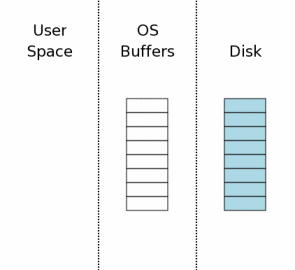
右边的图表概念性的展示了当数据库连接第一次打开时的计算机状态。图表中的最右边区域（标签“Disk”）表示存储在大容量存储器中的数据。每个方框表示一个扇区，蓝色表示这个扇区包含原始数据。中间区域表示操作系统磁盘缓存。在我们的实例开始时，缓存是空的，这里我们使用空方框表示空的磁盘缓存。图表的最左边表示SQLite进程内存中的数据。数据库连接目前刚刚打开，还没有读取任何信息，所以这一部分还是空的。
The state of the computer when a database connection is
first opened is shown conceptually by the diagram at the
right.
The area of the diagram on the extreme right (labeled "Disk") represents
information stored on the mass storage device. Each rectangle is
a sector. The blue color represents that the sectors contain
original data.
The middle area is the operating systems disk cache. At the
onset of our example, the cache is cold and this is represented
by leaving the rectangles of the disk cache empty.
The left area of the diagram shows the content of memory for
the process that is using SQLite. The database connection has
just been opened and no information has been read yet, so the
user space is empty.
3.2 获取读锁
3.2 Acquiring A Read Lock
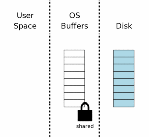
在SQLite写数据库之前，必须首先读取数据库看看里面已经有的内容。即使是仅仅追加新数据，SQLite依然需要从数据库中的sqlite_master表中读取数据库架构，因为这样才能知道如何处理INSERT语句，以及找到将新内容存储在数据库文件中的位置。
Before SQLite can write to a database, it must first read
the database to see what is there already. Even if it is just
appending new data, SQLite still has to read in the database
schema from the sqlite_master table so that it can know
how to parse the INSERT statements and discover where in the
database file the new information should be stored.
第一步，为了读取数据库文件，需要在数据库文件上获取一个共享锁。“共享”锁允许两个以上的数据库连接同时读取数据库文件。而且共享锁可以在读取的过程中阻止其他连接写入数据库的操作。这是非常有必要的，因为如果在一个连接正在写入数据库的同时读取数据库，那么就可能同时读取到部分修改前的数据和部分修改后的数据。这会导致写入线程看来不是原子性的。
The first step toward reading from the database file
is obtaining a shared lock on the database file. A "shared"
lock allows two or more database connections to read from the
database file at the same time. But a shared lock prevents
another database connection from writing to the database file
while we are reading it. This is necessary because if another
database connection were writing to the database file at the
same time we are reading from the database file, we might read
some data before the change and other data after the change.
This would make it appear as if the change made by the other
process is not atomic.
注意，共享锁实在操作系统的磁盘缓存中，而不是在磁盘上。通常，文件锁实际上只是操作系统内核中的一个标志位（具体要取决于OS系统层的接口）。因此，在操作系统崩溃或者断电的时候这个锁会立即消失。还有一个常见的情况，就是当创建锁的进程退出时，这个锁也会消失。
Notice that the shared lock is on the operating system
disk cache, not on the disk itself. File locks
really are just flags within the operating system kernel,
usually. (The details depend on the specific OS layer
interface.) Hence, the lock will instantly vanish if the
operating system crashes or if there is a power loss. It
is usually also the case that the lock will vanish if the
process that created the lock exits.
3.3 从数据库读出数据
3.3 Reading Information Out Of The Database
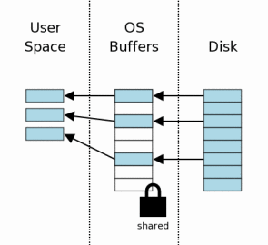
在获取了共享锁之后，我们就可以开始从数据库读出数据了。在这里，我们假设缓存是空的，所以数据必须首先从大容量存储设备中读到操作系统的缓存中，然后再从操作系统缓存传到用户空间。在后续的读取中，一些信息可能已经存在于操作系统缓存之中，这样只需要传到用户空间即可。
After the shared lock is acquired, we can begin reading
information from the database file. In this scenario, we
are assuming a cold cache, so information must first be
read from mass storage into the operating system cache then
transferred from operating system cache into user space.
On subsequent reads, some or all of the information might
already be found in the operating system cache and so only
the transfer to user space would be required.
通常只需要读取数据库文件中的一部分页。在这个示例中我们可以看到只读取了八个页中的三个。在典型的应用中，一个数据库会包含上千个页，而一次查询通常只需要接触到很少的一部分页。
Usually only a subset of the pages in the database file
are read. In this example we are showing three
pages out of eight being read. In a typical application, a
database will have thousands of pages and a query will normally
only touch a small percentage of those pages.
3.4 获取一个预留锁（Reserved Lock）
3.4 Obtaining A Reserved Lock
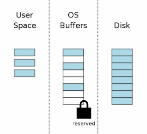
在修改数据库之前，SQLite会首先在数据库文件上获取一个“预留”锁。预留锁与共享锁类似，两者都允许其它进程读取数据库文件。一个预留锁可以与来自其它进程的多个共享锁共存。但是数据库文件上只能有一个预留所。因此同一时刻只能有一个进程试图写入数据库。
Before making changes to the database, SQLite first
obtains a "reserved" lock on the database file. A reserved
lock is similar to a shared lock in that both a reserved lock
and shared lock allow other processes to read from the database
file. A single reserve lock can coexist with multiple shared
locks from other processes. However, there can only be a
single reserved lock on the database file. Hence only a
single process can be attempting to write to the database
at one time.
预留锁实际的意义是用来表示有一个进程在不久后想要修改数据库文件，但是还没有开始执行修改。正因为修改还没有开始，所以其它进程可以继续读取数据库。但是，其它进程都不能再试图写入数据库。
The idea behind a reserved lock is that it signals that
a process intends to modify the database file in the near
future but has not yet started to make the modifications.
And because the modifications have not yet started, other
processes can continue to read from the database. However,
no other process should also begin trying to write to the
database.
3.5 创建回滚日志文件
3.5 Creating A Rollback Journal File
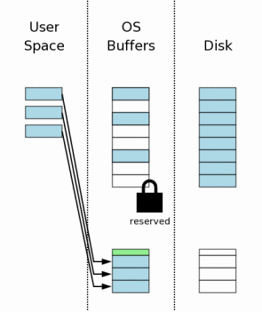
在执行数据库文件修改之前，SQLite首先创建一个单独的回滚日志文件，并把将被修改的数据库页的原始内容写入到回滚日志中。回滚日志的目的是用来保存将数据库恢复到原始状态的所有信息。
Prior to making any changes to the database file, SQLite first
creates a separate rollback journal file and writes into the
rollback journal the original
content of the database pages that are to be altered.
The idea behind the rollback journal is that it contains
all information needed to restore the database back to
its original state.
回滚日志包含一个很小的头部（图表中绿色的部分），这是用来记录数据库文件原始大小的。所以，如果修改导致数据库文件增长，我们依然可以知道数据库的原始大小。页的编号和每一页存储在一起，写入回滚日志中。
The rollback journal contains a small header (shown in green
in the diagram) that records the original size of the database
file. So if a change causes the database file to grow, we
will still know the original size of the database. The page
number is stored together with each database page that is
written into the rollback journal.
当创建一个新文件时，大多数桌面操作系统（Windows、Linux、Mac OS X）实际上不会向磁盘写入任何内容。新文件只是创建在了操作系统的磁盘缓存中。只有过一段时间，当系统有空闲时间时，才会将文件写入到存储器中。这样可以让用户感觉I/O速度要比实际写入磁盘速度快的多。我们将这一点展示到右图中，其中，新的回滚日志只是出现在操作系统的磁盘缓存中，而不是真正在磁盘中。
When a new file is created, most desktop operating systems
(Windows, Linux, Mac OS X) will not actually write anything to
disk. The new file is created in the operating systems disk
cache only. The file is not created on mass storage until sometime
later, when the operating system has a spare moment. This creates
the impression to users that I/O is happening much faster than
is possible when doing real disk I/O. We illustrate this idea in
the diagram to the right by showing that the new rollback journal
appears in the operating system disk cache only and not on the
disk itself.
3.6 修改用户空间的数据库页
3.6 Changing Database Pages In User Space
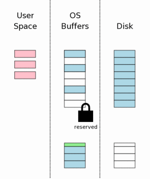
在原始页内容存入回滚日志之后，用户内存中的页就可以修改了。每个数据库连接都有一份私有的用户空间，所以在用户空间做的修改，只对做出修改的数据库连接可见。其他数据库连接只能看到操作系统磁盘缓存中还没有修改的版本。因此，即使一个进程正忙于修改数据库，其它进程依然可以继续读取原始数据库内容。
After the original page content has been saved in the rollback
journal, the pages can be modified in user memory. Each database
connection has its own private copy of user space, so the changes
that are made in user space are only visible to the database connection
that is making the changes. Other database connections still see
the information in operating system disk cache buffers which have
not yet been changed. And so even though one process is busy
modifying the database, other processes can continue to read their
own copies of the original database content.
3.7 将回滚日志写入存储器
3.7 Flushing The Rollback Journal File To Mass Storage
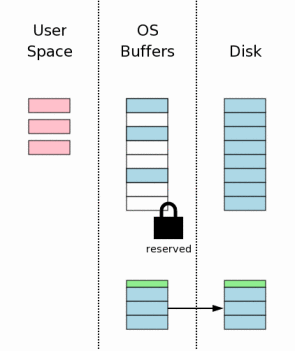
下一步是将回滚日志中的内容写入到非易失的存储器中。正如我们后面将看到的，这一步是保证数据库能从意外断电中恢复的决定性的步奏。这一步同时也需要花费大量时间，因为通常写入非易失存储器是非常缓慢的操作。
The next step is to flush the content of the rollback journal
file to nonvolatile storage.
As we will see later,
this is a critical step in insuring that the database can survive
an unexpected power loss.
This step also takes a lot of time, since writing to nonvolatile
storage is normally a slow operation.
这一步通常要比单纯的将回滚日志写入磁盘复杂的多。在多数平台上需要单独的两次写入（fsync()）操作。第一次是将基础回滚日志内容写入磁盘。然后修改回滚日志的头部，记录回滚日志中页的数量。最后将头部写入到磁盘中。本文档后面的章节会详细讲解为什么需要修改头部和额外的一次写入。
This step is usually more complicated than simply flushing
the rollback journal to the disk. On most platforms two separate
flush (or fsync()) operations are required. The first flush writes
out the base rollback journal content. Then the header of the
rollback journal is modified to show the number of pages in the
rollback journal. Then the header is flushed to disk. The details
on why we do this header modification and extra flush are provided
in a later section of this paper.
3.8 获取互斥锁
3.8 Obtaining An Exclusive Lock
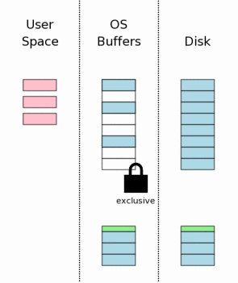
在修改数据库文件本身之前，我们必须在数据库文件上获取一个互斥锁。获取一个互斥锁实际上有两个步奏。第一步SQLite获取一个“准备（pending）”锁。然后将准备锁升级为一个互斥锁。
Prior to making changes to the database file itself, we must
obtain an exclusive lock on the database file. Obtaining an
exclusive lock is really a two-step process. First SQLite obtains
a "pending" lock. Then it escalates the pending lock to an
exclusive lock.
准备锁允许其它已经获取了共享锁的进程继续读取数据库文件。但是会阻止申请新共享锁。准备锁的主要目的是防止写入者被大量的读取者给饿死。这里可能会有数十个，甚至数百个进程想要读取数据库文件。每个进程都会在开始读取前获取一个共享锁，然后读取所需的内容，最后释放共享锁。但是，如果有许多许多不同的进程都在读取同一个数据库，那么就会发生这种情况，新进程总是在前一个进程释放它的共享锁之前又获取了一个新的共享锁。所以，就会出现数据库文件上始终都有共享锁的情况，因此，写入者就没有机会能获取互斥锁。设计准备锁的目的就是通过允许已有的共享锁继续进行和阻止新的共享锁获取来防止出现这种循环。最后所有的共享锁都会释放，然后准备锁就可以升级为互斥锁了。
A pending lock allows other processes that already have a
shared lock to continue reading the database file. But it
prevents new shared locks from being established. The idea
behind a pending lock is to prevent writer starvation caused
by a large pool of readers. There might be dozens, even hundreds,
of other processes trying to read the database file. Each process
acquires a shared lock before it starts reading, reads what it
needs, then releases the shared lock. If, however, there are
many different processes all reading from the same database, it
might happen that a new process always acquires its shared lock before
the previous process releases its shared lock. And so there is
never an instant when there are no shared locks on the database
file and hence there is never an opportunity for the writer to
seize the exclusive lock. A pending lock is designed to prevent
that cycle by allowing existing shared locks to proceed but
blocking new shared locks from being established. Eventually
all shared locks will clear and the pending lock will then be
able to escalate into an exclusive lock.
3.9 将修改写入数据库文件
3.9 Writing Changes To The Database File
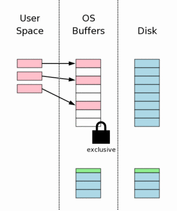
一旦获取了互斥锁，我们就可以确定没有其它线程读取数据库文件了，这是就可以安全的将改动写入到数据库文件中。通常这些改动只是写入到操作系统的磁盘缓存中，而无法直接写入到大容量存储器中。
Once an exclusive lock is held, we know that no other
processes are reading from the database file and it is
safe to write changes into the database file. Usually
those changes only go as far as the operating systems disk
cache and do not make it all the way to mass storage.
3.10 将改动写入大容量存储器
3.10 Flushing Changes To Mass Storage
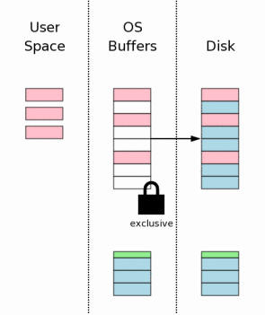
这时再一次需要进行磁盘写入，以确保所有的磁盘改动都写入到非易失存储器中。这是确保数据库在意外断电后可以完整恢复的决定性步奏。由于内部写入磁盘或闪存是非常缓慢的，所以SQlite中这一步和上面3.7章中写入回滚日志步奏消耗了完成一次事务提交所需的绝大部分时间。
Another flush must occur to make sure that all the
database changes are written into nonvolatile storage.
This is a critical step to ensure that the database will
survive a power loss without damage. However, because
of the inherent slowness of writing to disk or flash memory,
this step together with the rollback journal file flush in section
3.7 above takes up most of the time required to complete a
transaction commit in SQLite.
3.11 删除回滚日志
3.11 Deleting The Rollback Journal
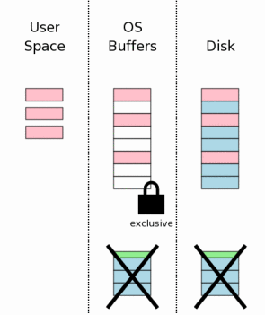
在数据库改动安全写入到大容量存储设备之后会删除回滚日志。这就是事务提交的时刻。如果在这个点之前发生系统崩溃或者意外断电，那么那么稍后介绍的恢复流程就会登场，而数据库会被当做没有做过任何修改一样。如果在回滚日志删除之后发生系统崩溃或者意外断电，那么就会认为所有的改动已经写入到磁盘中。所以在SQLite中是根据回滚日志是否存在来判断一个数据库文件没有被改动还是数据库文件的所有改动已经完成的。
After the database changes are all safely on the mass
storage device, the rollback journal file is deleted.
This is the instant where the transaction commits.
If a power failure or system crash occurs prior to this
point, then recovery processes to be described later make
it appear as if no changes were ever made to the database
file. If a power failure or system crash occurs after
the rollback journal is deleted, then it appears as if
all changes have been written to disk. Thus, SQLite gives
the appearance of having made no changes to the database
file or having made the complete set of changes to the
database file depending on whether or not the rollback
journal file exists.
删除文件实际上并不是一个原子操作，但是在用户进程中来看是原子的。进程永远都可以询问操作系统“文件是否存在？”并且进程可以获得一个yes或no的回答。当事务提交时发生意外断电后，SQLite会询问操作系统回滚日志是否存在。如果回答“yes”那么事务就没有完成，将会回滚。如果回答是“no”那么就意味着事务已经完成了。
Deleting a file is not really an atomic operation, but
it appears to be from the point of view of a user process.
A process is always able to ask the operating system "does
this file exist?" and the process will get back a yes or no
answer. After a power failure that occurs during a
transaction commit, SQLite will ask the operating system
whether or not the rollback journal file exists. If the
answer is "yes" then the transaction is incomplete and is
rolled back. If the answer is "no" then it means the transaction
did commit.
是否有事务存在取决于是否有回滚日志存在，并且删除一个文件的操作在用户空间进程中看会表现为原子操作。因此，事务就会表现为一个原子操作。
The existence of a transaction depends on whether or
not the rollback journal file exists and the deletion
of a file appears to be an atomic operation from the point of
view of a user-space process. Therefore,
a transaction appears to be an atomic operation.
删除文件的操作在许多系统上开销是非常大的。作为一个优化，可以将SQLite配置为将回滚日志长度截短为零或者将日志文件头覆盖成零。这两种情况下，回滚日志就不再适合做回滚了，而事务也就提交了。将文件长度截短为零与删除文件一样，都假设在用户进程中来看是原子操作。将日志头覆盖为零却不是原子的，不过如果头部的任何部分被修改了，日志都无法回滚。因此，也可以说一旦头部被改动成无效，那么就完成提交了。一般来说，只要头部的第一个字节为零，事务就完成了。
The act of deleting a file is expensive on many systems.
As an optimization, SQLite can be configured to truncate
the journal file to zero bytes in length
or overwrite the journal file header with zeros. In either
case, the resulting journal file is no longer capable of rolling
back and so the transaction still commits. Truncating a file
to zero length, like deleting a file, is assumed to be an atomic
operation from the point of view of a user process. Overwriting
the header of the journal with zeros is not atomic, but if any
part of the header is malformed the journal will not roll back.
Hence, one can say that the commit occurs as soon as the header
is sufficiently changed to make it invalid. Typically this happens
as soon as the first byte of the header is zeroed.
3.12 释放锁
3.12 Releasing The Lock
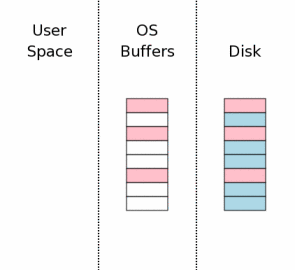
提交过程的最后一步是释放互斥锁，然后其它进程就再一次可以开始访问数据库文件了。
The last step in the commit process is to release the
exclusive lock so that other processes can once again
start accessing the database file.
在右图中，当锁释放时，我们将用户空间持有的数据清空了。这在过去的老版SQLite中是正确的。但是在最近的SQLite版本中，会继续将数据保留在用户空间内存中。以便万一这些数据在下一个事务开始时再一次需要这些数据。重用已经位于本地内存中的数据的开销要小于从操作系统磁盘缓存中获取数据或从磁盘驱动器中再次读取。
在重用用户空间的数据之前，必须首先重新获取共享锁，然后还要检查确保在在未持有锁的时候其它进程没有修改数据库文件。在数据库的第一页中有一个计数器，会在每次数据库修改的时候自增。我们就可以通过这个值来确认其它进程是否修改了数据库。如果数据库被修改了，那么用户空间的缓存就必须清除了重新读取。
但是，通常情况下，不会有改动发生，也就可以通过重用用户空间缓存来节省大量的开销。
In the diagram at the right, we show that the information
that was held in user space is cleared when the lock is released.
This used to be literally true for older versions of SQLite. But
more recent versions of SQLite keep the user space information
in memory in case it might be needed again at the start of the
next transaction. It is cheaper to reuse information that is
already in local memory than to transfer the information back
from the operating system disk cache or to read it off of the
disk drive again. Prior to reusing the information in user space,
we must first reacquire the shared lock and then we have to check
to make sure that no other process modified the database file while
we were not holding a lock. There is a counter in the first page
of the database that is incremented every time the database file
is modified. We can find out if another process has modified the
database by checking that counter. If the database was modified,
then the user space cache must be cleared and reread. But it is
commonly the case that no changes have been made and the user
space cache can be reused for a significant performance savings.
4.0 回滚
4.0 Rollback
通常期望自动提交能够瞬间执行。但是上面描述的流程明显花费了一段时间。假设，在上面描述的提交操作过程中计算机的电源被切断了。为了维持修改是瞬间执行的这个错觉，我们需要“回滚”改动的部分，将数据库恢复到事务执行前的状态。
An atomic commit is supposed to happen instantaneously. But the processing
described above clearly takes a finite amount of time.
Suppose the power to the computer were cut
part way through the commit operation described above. In order
to maintain the illusion that the changes were instantaneous, we
have to "rollback" any partial changes and restore the database to
the state it was in prior to the beginning of the transaction.
4.1 当出现错误时。。。
4.1 When Something Goes Wrong...
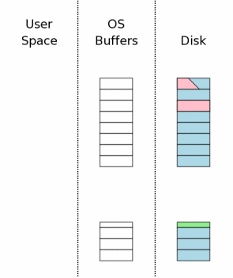
假设在上面第 3.10 步发生断电故障，此时，数据库改动都已经写入到磁盘中。在电力恢复后，情况可能是右图所示的状态。我们试图修改数据库文件中的三个页，但是只有一个页成功写入了，另一个页只写入了一部分，第三个页根本没有写入。
Suppose the power loss occurred
during step 3.10 above,
while the database changes were being written to disk.
After power is restored, the situation might be something
like what is shown to the right. We were trying to change
three pages of the database file but only one page was
successfully written. Another page was partially written
and a third page was not written at all.
当电力恢复时回滚日志是完好无损的位于磁盘上。这是关键点。因为第 3.7 步中的写入同步操作就是用来绝对的确保所有的回滚日志都已经安全的写入到了非易失的设备中。然后才会修改原始数据库文件本身。
The rollback journal is complete and intact on disk when
the power is restored. This is a key point. The reason for
the flush operation in step 3.7
is to make absolutely sure that
all of the rollback journal is safely on nonvolatile storage
prior to making any changes to the database file itself.
4.2 活跃回滚日志
4.2 Hot Rollback Journals
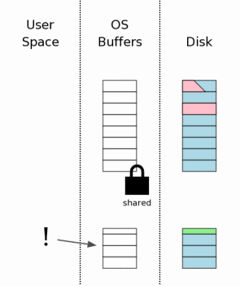
当SQLite进程第一次访问数据库文件时，会像上面第 3.2 步一样获取一个共享锁。但是这时会注意到有回滚日志存在。这时SQLite会检查看这个回滚日志是否是一个“活跃日志”。活跃日志的意思是说，这是一个需要执行的回滚日志，需要恢复数据库状态。活跃日志只有当前一个进程在执行提交事务的过程中发生了崩溃或者断电时才会存在。
The first time that any SQLite process attempts to access
the database file, it obtains a shared lock as described in
section 3.2 above.
But then it notices that there is a
rollback journal file present. SQLite then checks to see if
the rollback journal is a "hot journal". A hot journal is
a rollback journal that needs to be played back in order to
restore the database to a sane state. A hot journal only
exists when an earlier process was in the middle of committing
a transaction when it crashed or lost power.
只有下面条件都满足才能确认一个回滚日志是“活跃”日志：
A rollback journal is a "hot" journal if all of the following
are true:
- 存在回滚日志
The rollback journal exists. - 回滚日志不是空文件
The rollback journal is not an empty file. - 主数据库文件上没有预留所。
There is no reserved lock on the main database file. - 日志头部是格式完整的，尤其是不存在零。
The header of the rollback journal is well-formed and in particular has not been zeroed out. - 回滚日志中不包含主日志文件的名字（参见下面的第 5.5 章。或者是包含主日文件的名字且存在主日志文件。
The rollback journal does not contain the name of a master journal file (see section 5.5 below) or if does contain the name of a master journal, then that master journal file exists.
存在活跃日志也就意味着，前一个进程正在提交事务，但是在完成提交之前被某些原因给中止了。存在活跃日志还意味着，数据库文件目前处于不一致的状态，需要在使用前进行修复（回滚）。
The presence of a hot journal is our indication
that a previous process was trying to commit a transaction but
it aborted for some reason prior to the completion of the
commit. A hot journal means that
the database file is in an inconsistent state and needs to
be repaired (by rollback) prior to being used.
4.3 在数据库上获取一个互斥锁。
4.3 Obtaining An Exclusive Lock On The Database
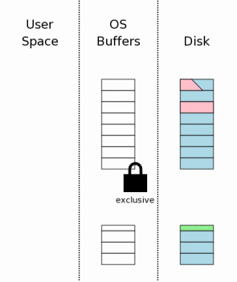
处理活跃日志的第一步就是在数据库文件上获取一个互斥锁。这可以阻止两个以上的进程同时回滚同一个预留日志。
The first step toward dealing with a hot journal is to
obtain an exclusive lock on the database file. This prevents two
or more processes from trying to rollback the same hot journal
at the same time.
4.4 回滚未完成的改动
4.4 Rolling Back Incomplete Changes
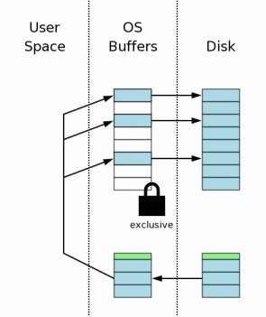
一旦进程获取了互斥锁，就允许其写入数据库文件。这时进程开始读取回滚日志中页的原始内容，然后将其写回到数据库文件中每个页原来的位置中去。还记得回滚日志的头部记录着中止的事务开始前数据库文件的原始大小。SQLite使用这个信息来将数据库文件从该事务将其增长的长度截短到原始的大小。在这一步的末尾，数据库的长度和内容给都应该和中断事务开始前是一样的。
Once a process obtains an exclusive lock, it is permitted
to write to the database file. It then proceeds to read the
original content of pages out of the rollback journal and write
that content back to where it came from in the database file.
Recall that the header of the rollback journal records the original
size of the database file prior to the start of the aborted
transaction. SQLite uses this information to truncate the
database file back to its original size in cases where the
incomplete transaction caused the database to grow. At the
end of this step, the database should be the same size and
contain the same information as it did before the start of
the aborted transaction.
4.5 删除活跃日志
4.5 Deleting The Hot Journal
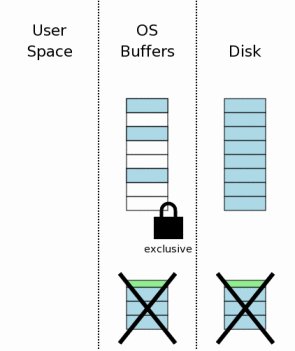
当回滚日志中的所有信息都已经写回数据库文件后（并写入同步到磁盘中以防止再一次遇到断电错误），活跃回滚日志文件就可以删除了。
After all information in the rollback journal has been
played back into the database file (and flushed to disk in case
we encounter yet another power failure), the hot rollback journal
can be deleted.
如第 3.11 章所述，回滚日志可能会截短到零长度，或者在头部覆盖入零，这是对一些删除文件代价很高的系统的一个优化。不管哪种方式，在这步之后，日志都失效了。
As in section 3.11, the journal
file might be truncated to zero length or its header might
be overwritten with zeros as an optimization on systems where
deleting a file is expensive. Either way, the journal is no
longer hot after this step.
4.6 当做未完成的写入根本没有发生一样继续运行
4.6 Continue As If The Uncompleted Writes Had Never Happened
最后的恢复步奏是释放互斥锁，重新持有共享锁。一旦到这一步，数据库就已经恢复到就像中断事务从来没有开始过一样。由于整个恢复过程是完善的、全自动的、透明的，所以对于使用SQLite的程序来说就好像中断事务重来没有发生一样。
The final recovery step is to reduce the exclusive lock back
to a shared lock. Once this happens, the database is back in the
state that it would have been if the aborted transaction had never
started. Since all of this recovery activity happens completely
automatically and transparently, it appears to the program using
SQLite as if the aborted transaction had never begun.
5.0 多文件提交
5.0 Multi-file Commit
SQLite允许一个数据库链接通过ATTACH DATABASE命令同时访问两个或多个数据库文件。当在一个事务修改多个文件时，所有文件都必须原子的更新。也就是说所有的数据库文件要么都完成更新，要么都没有更新。
在多个数据库文件上实现原子提交要比单个文件上复杂的多。这一章讲述了SQLite如何神奇的完成这一点的。
SQLite allows a single
database connection to talk to
two or more database files simultaneously through the use of
the ATTACH DATABASE command.
When multiple database files are modified within a single
transaction, all files are updated atomically.
In other words, either all of the database files are updated or
else none of them are.
Achieving an atomic commit across multiple database files is
more complex that doing so for a single file. This section
describes how SQLite works that bit of magic.
5.1 每个数据库一个单独的回滚日志
5.1 Separate Rollback Journals For Each Database
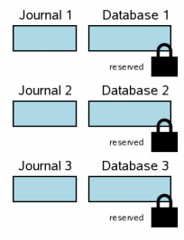
当在一个事务中涉及多个数据库文件时，每个数据库都有一个独立的回滚日志和独立的锁。右图展示了一个事务中修改三个不同的数据库文件的场景。这一步的情况与单文件事务中的第3.6步类似。每个数据库都有一个预留锁。每个数据库都会将即将修改的页的原始内容写入到每个数据库各自的回滚日志文件中，但是日志的内容还没有同步到磁盘中。数据库文件上也还没有做任何改动，虽然可能在用户内存中已经做出了修改。
When multiple database files are involved in a transaction,
each database has its own rollback journal and each database
is locked separately. The diagram at the right shows a scenario
where three different database files have been modified within
one transaction. The situation at this step is analogous to
the single-file transaction scenario at
step 3.6. Each database file has
a reserved lock. For each database, the original content of pages
that are being changed have been written into the rollback journal
for that database, but the content of the journals have not yet
been flushed to disk. No changes have been made to the database
file itself yet, though presumably there are changes being held
in user memory.
为了简洁一些，这一章的图表比上面的图表要简化一些。蓝色依然表示原始内容，粉色依然表示新内容。但是回滚日志和数据库文件中的页则不再独立表示，并且也不再区分数据是在操作系统缓存中还是在磁盘上。所有这些因素依然适用于多文件提交场景。可是它们除了占据图表中的大量位置之外不会提供任何新的信息，所以我们在这里将其忽略了。
For brevity, the diagrams in this section are simplified from
those that came before. Blue color still signifies original content
and pink still signifies new content. But the individual pages
in the rollback journal and the database file are not shown and
we are not making the distinction between information in the
operating system cache and information that is on disk. All of
these factors still apply in a multi-file commit scenario. They
just take up a lot of space in the diagrams and they do not add
any new information, so they are omitted here.
5.2 主日志文件
5.2 The Master Journal File
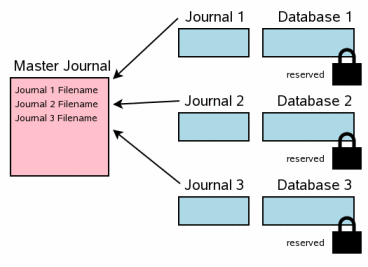
多文件提交的下一个步奏就是创建一个“主日志”文件。主日志文件的名字与原始数据库文件（使用sqlite3_open()接口打开的数据库，而不是ATTACH附加的数据库）类似。在原始数据库文件的名字后面加上"-mjHHHHHHHH"，其中HHHHHHHH是一个32位的随机十六进制数字。每个新主日志文件的随机HHHHHHHH后缀都不相同。
The next step in a multi-file commit is the creation of a
"master journal" file. The name of the master journal file is
the same name as the original database filename (the database
that was opened using the
sqlite3_open() interface,
not one of the ATTACHed auxiliary
databases) with the text "-mjHHHHHHHH" appended where
HHHHHHHH is a random 32-bit hexadecimal number. The
random HHHHHHHH suffix changes for every new master journal.
（注意：前一段给出的主日志文件名生成方法只是SQLite3.5.0版之后的实现。由于这个方法不是SQLite说明中的一部分，所以在未来的发行版中可能会发生变动。）
(Nota bene: The formula for computing the master journal filename
given in the previous paragraph corresponds to the implementation as
of SQLite version 3.5.0. But this formula is not part of the SQLite
specification and is subject to change in future releases.)
与回滚日志不同的是，主日志中不包含任何原始数据库页的内容。而是存储了参与事务的每个数据库相应的回滚日志文件的完整路径名。
Unlike the rollback journals, the master journal does not contain
any original database page content. Instead, the master journal contains
the full pathnames for rollback journals for every database that is
participating in the transaction.
在主日志生成之后，会首先将其写入同步到磁盘中，然后才做其他操作。在Unix中，包含主日志的文件夹也同样会进行同步，以确保主日志能在断电后出现在目录中。
After the master journal is constructed, its content is flushed
to disk before any further actions are taken. On Unix, the directory
that contains the master journal is also synced in order to make sure
the master journal file will appear in the directory following a
power failure.
5.3 更新回滚日志头
5.3 Updating Rollback Journal Headers
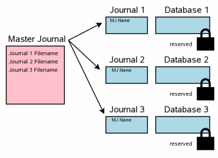
下一步就是将主日志文件的完整路径名记录到每一个回滚日志的头部。每个回滚日志中保存主日志文件名的空间是在回滚日志创建时就预留好的。
The next step is to record the full pathname of the master journal file
in the header of every rollback journal. Space to hold the master
journal filename was reserved at the beginning of each rollback journal
as the rollback journals were created.
将回滚日志的内容同步到磁盘上与将主日志文件名写入到回滚日志头部是前后进行的。这两次同步是非常重要的。幸运的是，第二次同步的开销通常很小，这是因为，通常日志文件中只有一个页面发生改动（第一页）。
The content of each rollback journal is flushed to disk both before
and after the master journal filename is written into the rollback
journal header. It is important to do both of these flushes. Fortunately,
the second flush is usually inexpensive since typically only a single
page of the journal file (the first page) has changed.
这一步与上面描述的单文件提交场景中的第 3.7 步类似。
This step is analogous to
step 3.7 in the single-file commit
scenario described above.
5.4 更新数据库文件
5.4 Updating The Database Files
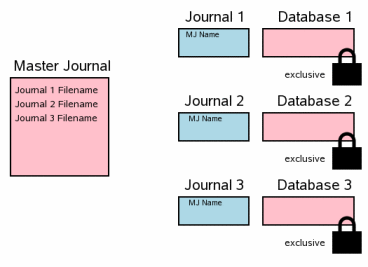
一旦所有回滚日志文件都同步到磁盘上之后，就可以安全的开始更新数据库文件了。写入改动之前，我们需要在所有数据库文件上获取互斥锁。在所有改动都写入之后，需要将这些改动同步到磁盘上，这一步非常重要，因为，这保证了数据能在断电或者系统崩溃之后得以保留。
Once all rollback journal files have been flushed to disk, it
is safe to begin updating database files. We have to obtain an
exclusive lock on all database files before writing the changes.
After all the changes are written, it is important to flush the
changes to disk so that they will be preserved in the event of
a power failure or operating system crash.
这一步与前面介绍的单文件提交场景中的3.8、
3.9和
3.10一致。
This step corresponds to steps
3.8,
3.9, and
3.10 in the single-file commit
scenario described previously.
5.5 删除主日志文件
5.5 Delete The Master Journal File
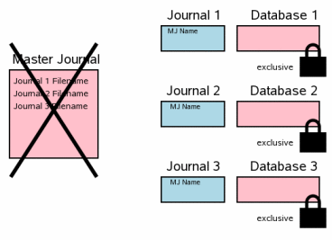
下一步就是删除主日志文件。这一步是多文件事务提交的决定点。这一步对应单文件提交场景中的第 3.11 步——删除回滚日志。
The next step is to delete the master journal file.
This is the point where the multi-file transaction commits.
This step corresponds to
step 3.11 in the single-file
commit scenario where the rollback journal is deleted.
如果在这个时候发生断电故常或者操作系统崩溃，在系统重启后，即使回滚日志都还在也不会进行回滚操作。与单文件场景的不同之处在于回滚日志的头部有主日志文件名。在重启之后，只有当回滚日志头中没有主日志文件名（单文件提交情况）或者包含主日志文件名且主日志存在这两种情况时才会认为是活跃日志，并进行回滚操作。
If a power failure or operating system crash occurs at this
point, the transaction will not rollback when the system reboots
even though there are rollback journals present. The
difference is the master journal pathname in the header of the
rollback journal. Upon restart, SQLite only considers a journal
to be hot and will only playback the journal if there is no
master journal filename in the header (which is the case for
a single-file commit) or if the master journal file still
exists on disk.
5.6 清理回滚日志
5.6 Clean Up The Rollback Journals
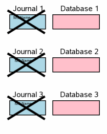
在多文件提交中的最后一步是删除每个回滚日志并释放数据库文件上的互斥锁。这样其它进程就可以看见改动了。这对应于单文件提交中的第 3.12 步。
The final step in a multi-file commit is to delete the
individual rollback journals and drop the exclusive locks on
the database files so that other processes can see the changes.
This corresponds to
step 3.12 in the single-file
commit sequence.
在这时事务已经完成提交了，所以删除回滚日志的时间就不是关键问题了。目前的实现中，会删除一个回滚日志并解锁相应的数据库，然后再处理下一个回滚日志。但是在未来的版本中可能会改成先删除所有的回滚日志，然后在解锁所有的数据库。只要保证回滚日志在相应的数据库文件解锁前删除就可以了，而无需在意删除回滚日志和解锁数据库文件的顺序。
The transaction has already committed at this point so timing
is not critical in the deletion of the rollback journals.
The current implementation deletes a single rollback journal
then unlocks the corresponding database file before proceeding
to the next rollback journal. But in the future we might change
this so that all rollback journals are deleted before any database
files are unlocked. As long as the rollback journal is deleted before
its corresponding database file is unlocked it does not matter in what
order the rollback journals are deleted or the database files are
unlocked.
6.0 提交过程的附加说明
6.0 Additional Details Of The Commit Process
前面的第 3.0 章对SQLite中的原子提交进行了一个综述。但是这里遗漏了很多重要的内容。下面的内容会填补这些遗漏的缝隙。
Section 3.0 above provides an overview of
how atomic commit works in SQLite. But it glosses over a number of
important details. The following subsections will attempt to fill
in the gaps.
6.1 总是记录完整扇区
6.1 Always Journal Complete Sectors
当数据库页的原始内容写入到回滚日志里时（见第 3.5 步），SQLite总是会写入一整扇区的数据，即使数据库的页尺寸小于扇区尺寸也是一样。由于历史原因，SQLite中的扇区大小被硬编码为了512字节，因此页尺寸的最小值也是512字节，这没有任何问题。但是从SQLite3.3.14版开始，SQLite可以适用扇区尺寸大于512字节的大容量存储设备。所以从3.3.14版开始，当一个扇区中的任何一个页要写入日志文件中时，同一扇区中的所有页都会一起被写入。
When the original content of a database page is written into
the rollback journal (as shown in section 3.5),
SQLite always writes a complete sectors worth of data, even if the
page size of the database is smaller than the sector size.
Historically, the sector size in SQLite has been hard coded to 512
bytes and since the minimum page size is also 512 bytes, this has never
been an issue. But beginning with SQLite version 3.3.14, it is possible
for SQLite to use mass storage devices with a sector size larger than 512
bytes. So, beginning with version 3.3.14, whenever any page within a
sector is written into the journal file, all pages in that same sector
are stored with it.
将扇区中的所有页都存储进回滚日志，这一点对于防止数据库在写入扇区时发生断电错误后出现错误是非常重要的。假设，页1、2、3和4都存储在扇区1中，其中修改了页2.为了将修改写入页2中，底层硬件必须覆写页1、3和4，这是因为硬件必须写入一个完整的扇区。如果这个写入操作被断电给中断了，页1、3和4中可能会有几个页的数据会丢失。因此，为了避免损坏数据库，所有这些页中的原始数据都需要保存到回滚日志中。
It is important to store all pages of a sector in the rollback
journal in order to prevent database corruption following a power
loss while writing the sector. Suppose that pages 1, 2, 3, and 4 are
all stored in sector 1 and that page 2 is modified. In order to write
the changes to page 2, the underlying hardware must also rewrite the
content of pages 1, 3, and 4 since the hardware must write the complete
sector. If this write operation is interrupted by a power outage,
one or more of the pages 1, 3, or 4 might be left with incorrect data.
Hence, to avoid lasting corruption to the database, the original content
of all of those pages must be contained in the rollback journal.
6.2 处理写入日志文件中的垃圾内容
6.2 Dealing With Garbage Written Into Journal Files
当数据追加到回滚日志的末尾时，SQLite通常会做出一个悲观的假设，这个文件会首先适用无效的“垃圾”数据来扩展文件，然后再使用正确的数据替换这些垃圾。也就是说，SQLite假设文件首先增加长短，然后才写入数据。如果在文件增长之后、数据写入之前发生了意外断电，那么回滚日志中会留下垃圾数据。在电力恢复之后，另一个SQLite进程发现了包含垃圾数据的回滚日志，然后将内容恢复到原始数据库文件中，这样就可能会将一些垃圾数据复制到数据库文件中，也就损坏了数据库文件。
When data is appended to the end of the rollback journal,
SQLite normally makes the pessimistic assumption that the file
is first extended with invalid "garbage" data and that afterwards
the correct data replaces the garbage. In other words, SQLite assumes
that the file size is increased first and then afterwards the content
is written into the file. If a power failure occurs after the file
size has been increased but before the file content has been written,
the rollback journal can be left containing garbage data. If after
power is restored, another SQLite process sees the rollback journal
containing the garbage data and tries to roll it back into the original
database file, it might copy some of the garbage into the database file
and thus corrupt the database file.
SQLite适用了两种防范策略来防止这个问题。第一个是SQLite在回滚日志的头部记录了回滚日志中页的数量。这个数字会初始化为零。所以在试图回滚一个不完整（也可能是错误的）的回滚日志时，进行回滚的进程会发现回滚日志中包含零个页，这样就会不对数据库做出任何改动。
在提交之前，回滚日志会同步到磁盘中，以确保所有内容都已经同步到磁盘中并且没有任何“垃圾”遗留在文件中，只有这时候才会将头部的页数量从零改为回滚日志中真实的页数量。回滚日志的头部总是位于一个与数据页不同的扇区中，所以，头部可以安全的进行覆盖和同步，而不会在遇到断电故障时给数据页带来损害。
注意，回滚日志会同步到磁盘两次：一次是写入内容页，第二次是在头部写入页数量。
SQLite uses two defenses against this problem. In the first place,
SQLite records the number of pages in the rollback journal in the header
of the rollback journal. This number is initially zero. So during an
attempt to rollback an incomplete (and possibly corrupt) rollback
journal, the process doing the rollback will see that the journal
contains zero pages and will thus make no changes to the database. Prior
to a commit, the rollback journal is flushed to disk to ensure that
all content has been synced to disk and there is no "garbage" left
in the file, and only then is the page count in the header changed from
zero to true number of pages in the rollback journal. The rollback journal
header is always kept in a separate sector from any page data so that
it can be overwritten and flushed without risking damage to a data
page if a power outage occurs. Notice that the rollback journal
is flushed to disk twice: once to write the page content and a second
time to write the page count in the header.
前一段介绍的是当同步指令设置为“full”时的处理流程。
The previous paragraph describes what happens when the
synchronous pragma setting is "full".
PRAGMA synchronous=FULL;
默认的同步设置是full，所以上面也就是通常的处理流程。但是，如果同步设置降低到“normal”，那么SQLite只会在写入页数量后只同步一次回滚日志。
这会带来出错的风险，因为，可能会出现修改的页数量（非零）比数据先写入到磁盘上。虽然是先写入数据，但是SQLite假设底层文件系统可能会对写请求顺序重排，这样，页数虽然是最后写入的，但是依然有可能是第一个写入磁盘的。所以就有了第二条防御策略，SQLite对回滚日志中的每一页数据都计算一个32位额校检码。在第 4.4步中回滚发现的日志文件时，会依次计算每一页的校检码。如果发现错误的校检码，那么回滚就会丢弃。注意，校检码无法绝对的保证数据的正确性，因为是有一个很小的可能性使错误的数据计算出正确的校检码。不过，校检码至少使这种错误很难发生。
The default synchronous setting is full so the above is what usually
happens. However, if the synchronous setting is lowered to "normal",
SQLite only flushes the rollback journal once, after the page count has
been written.
This carries a risk of corruption because it might happen that the
modified (non-zero) page count reaches the disk surface before all
of the data does. The data will have been written first, but SQLite
assumes that the underlying filesystem can reorder write requests and
that the page count can be burned into oxide first even though its
write request occurred last. So as a second line of defense, SQLite
also uses a 32-bit checksum on every page of data in the rollback
journal. This checksum is evaluated for each page during rollback
while rolling back a journal as described in
section 4.4. If an incorrect checksum
is seen, the rollback is abandoned. Note that the checksum does
not guarantee that the page data is correct since there is a small
but finite probability that the checksum might be right even if the data is
corrupt. But the checksum does at least make such an error unlikely.
注意，如果同步设置为FULL，那么回滚日志中的校检码就是不需要的了。只有当同步设置降到NORMAL时才会依赖校检码。不过，校检码本身是无害的，所以不管同步设置为什么，回滚日志中都会包含校检码。
Note that the checksums in the rollback journal are not necessary
if the synchronous setting is FULL. We only depend on the checksums
when synchronous is lowered to NORMAL. Nevertheless, the checksums
never hurt and so they are included in the rollback journal regardless
of the synchronous setting.
6.3 在提交前缓存溢出
6.3 Cache Spill Prior To Commit
在第 3.0 章中展示的提交流程中假设在提交时刻之前的所有数据操作都是适合放在内存中的。这是通常情况。但是，有时候，在事务提交之前的一个较大的改动可能会使用户空间缓存溢出。这种情况下，在事务完成之前缓存必须流入到数据库中。
The commit process shown in section 3.0
assumes that all database changes fit in memory until it is time to
commit. This is the common case. But sometimes a larger change will
overflow the user-space cache prior to transaction commit. In those
cases, the cache must spill to the database before the transaction
is complete.
在缓存溢出开始时，数据库连接的状态如第 3.6 步所示。原始内容已经存储到回滚日志中，同时修改的页存储在用户内存中。由于缓存溢出，SQLite需要执行步奏3.7 到 3.9。也就是将回滚日志同步到磁盘上、获取一个互斥锁和将修改写入数据库。但是剩下的步奏都延迟到事务事务真正提交之后。
回滚日志的末尾会追加一个新的日志头（在独立的扇区内），并且会保留互斥数据库锁，但是处理流程回退到第 3.6 步。
当事务提交或者又发生了缓存溢出时，会重复步骤3.7 和 3.9（步奏3.8在第二次或后续的过程中会被忽略，因为在第一次处理时已经获取了互斥数据库锁。
At the beginning of a cache spill, the status of the database
connection is as shown in step 3.6.
Original page content has been saved in the rollback journal and
modifications of the pages exist in user memory. To spill the cache,
SQLite executes steps 3.7 through
3.9. In other words, the rollback journal
is flushed to disk, an exclusive lock is acquired, and changes are
written into the database. But the remaining steps are deferred
until the transaction really commits. A new journal header is
appended to the end of the rollback journal (in its own sector)
and the exclusive database lock is retained, but otherwise processing
returns to step 3.6. When the transaction
commits, or if another cache spill occurs, steps
3.7 and 3.9 are
repeated. (Step 3.8 is omitted on second
and subsequent passes since an exclusive database lock is already held
due to the first pass.)
缓存溢出会导致数据库文件上的锁从预留锁升级到互斥锁。这会降低并发性。缓存溢出还会导致执行额外的同步或fsync操作，而这些操作都是缓慢的。因此，缓存溢出会明显的降低性能。由于这些原因，应当尽量的避免发生缓存溢出。
A cache spill causes the lock on the database file to
escalate from reserved to exclusive. This reduces concurrency.
A cache spill also causes extra disk flush or fsync operations to
occur and these operations are slow, hence a cache spill can
seriously reduce performance.
For these reasons a cache spill is avoided whenever possible.
7.0 优化
7.0 Optimizations
性能分析表明，在大多数系统中的多数情况下，SQLite将大部分时间都花费在了磁盘I/O上。这也就是说我们所做的任何能够降低磁盘I/O数量的事情，都可以给SQLite的性能带来明显的提升。这一节介绍了SQLite在保证原子提交的同时将磁盘I/O数量降到最低所适用的一些技术。
Profiling indicates that for most systems and in most circumstances
SQLite spends most of its time doing disk I/O. It follows then that
anything we can do to reduce the amount of disk I/O will likely have a
large positive impact on the performance of SQLite. This section
describes some of the techniques used by SQLite to try to reduce the
amount of disk I/O to a minimum while still preserving atomic commit.
7.1 事务间保留缓存
7.1 Cache Retained Between Transactions
提交流程的第 3.12 步 中一旦释放了共享锁，所有用户空间缓存中的数据库内容镜像都必须丢弃。这样做是因为在没有持有共享锁的时候，其他进程可以自由的修改数据库内容，因此，用户空间的任何内容镜像都有可能会过时。因此，每个事务开始时都需要重新读取以前已经读取过的内容。这并没有提起来那么坏，首先，一旦数据读取过，那么它很可能还在操作系统的文件缓存中。所以“读取”只是从内核空间到用户空间的数据复制。但是即使这样，这还是要花费时间。
Step 3.12 of the commit process shows
that once the shared lock has been released, all user-space cache
images of database content must be discarded. This is done because
without a shared lock, other processes are free to modify the database
file content and so any user-space image of that content might become
obsolete. Consequently, each new transaction would begin by rereading
data which had previously been read. This is not as bad as it sounds
at first since the data being read is still likely in the operating
systems file cache. So the "read" is really just a copy of data
from kernel space into user space. But even so, it still takes time.
从SQLite3.3.14版开始，引入了一个新的机制来试图减少无用的数据重读。在较新版的SQLite中，当数据库文件锁释放时，用户空间缓存中的数据会保留下来。稍后，在下个事务开始时，获取了共享锁之后，SQLite检查看是否有其他进程修改过数据库文件。如果在上次释放锁以后数据库已经被修改过，这时候会清除用户空间缓存。不过通常，数据库文件都没有修改过，用户空间缓存可以保留，这样就避免了许多不必要的读取操作。
Beginning with SQLite version 3.3.14 a mechanism has been added
to try to reduce the needless rereading of data. In newer versions
of SQLite, the data in the user-space pager cache is retained when
the lock on the database file is released. Later, after the
shared lock is acquired at the beginning of the next transaction,
SQLite checks to see if any other process has modified the database
file. If the database has been changed in any way since the lock
was last released, the user-space cache is erased at that point.
But commonly the database file is unchanged and the user-space cache
can be retained, and some unnecessary read operations can be avoided.
为了判断数据库文件是否修改过，SQLite使用了数据库头中的一个计数器（在第24-27字节），这个计数器每次数据库修改时都会自增。SQLite在释放数据库锁之前保存一份这个计数器值，当下一次获取数据库锁时，比较保存的计数器值和当前计数器值，如果值不同则清除缓存，如果相同，则重用缓存。
In order to determine whether or not the database file has changed,
SQLite uses a counter in the database header (in bytes 24 through 27)
which is incremented during every change operation. SQLite saves a copy
of this counter prior to releasing its database lock. Then after
acquiring the next database lock it compares the saved counter value
against the current counter value and erases the cache if the values
are different, or reuses the cache if they are the same.
7.2 互斥访问模式
7.2 Exclusive Access Mode
SQLite 3.3.14版增加了“互斥访问模式”的概念。在互斥访问模式中，SQLite在每次事务结束后依然保持着互斥锁。这阻止了其他进程访问数据库，但是在许多部署环境中，只有一个进程会适用这个数据库，所以这就不是一个严重的问题了。互斥访问模式的优点是通过三个方式减少了磁盘I/O：
SQLite version 3.3.14 adds the concept of "Exclusive Access Mode".
In exclusive access mode, SQLite retains the exclusive
database lock at the conclusion of each transaction. This prevents
other processes from accessing the database, but in many deployments
only a single process is using a database so this is not a
serious problem. The advantage of exclusive access mode is that
disk I/O can be reduced in three ways:
在一次事务后不需要增加数据库头部的修改计数器。这通常可以为回滚日志和主数据库文件分别节省一个写入页。
It is not necessary to increment the change counter in the database header for transactions after the first transaction. This will often save a write of page one to both the rollback journal and the main database file.由于没有其他进程可以修改数据库，所以不再需要检查修改计数器，也不用在事务开始时清除用户空间缓存。
No other processes can change the database so there is never a need to check the change counter and clear the user-space cache at the beginning of a transaction.每个事务都可以通过覆写回滚日志头部来提交，而不需要删除日志文件。这可以避免修改日志文件所在的目录，还可以避免释放与日志相应的磁盘扇区。此外，下一次事务只需要覆写已有的日志文件内容即可，而不需要追加新内容，并且，在多数系统上，覆写通常比追加要快。
Each transaction can be committed by overwriting the rollback journal header with zeros rather than deleting the journal file. This avoids having to modify the directory entry for the journal file and it avoids having to deallocate disk sectors associated with the journal. Furthermore, the next transaction will overwrite existing journal file content rather than append new content and on most systems overwriting is much faster than appending.
第三项优化，在日志头部覆写零而不删除回滚日志文件，这一项并不依赖于所有时间都持有互斥锁。这项设置可以脱离互斥锁模式独立适用，通过下面 7.6节介绍的journal_mode PRAGMA来设置。
The third optimization, zeroing the journal file header rather than
deleting the rollback journal file,
does not depend on holding an exclusive lock at all times.
This optimization can be set independently of exclusive lock mode
using the journal_mode pragma
as described in section 7.6 below.
7.3 不记录空闲列表页
7.3 Do Not Journal Freelist Pages
当从数据库中删除数据时，持有已删除信息的页会被加入到“空闲列表”中。后续的插入操作会从空闲列表中抽取页，而不用扩充数据库文件。
When information is deleted from an SQLite database, the pages used
to hold the deleted information are added to a "freelist". Subsequent
inserts will draw pages off of this freelist rather than expanding the
database file.
一些空闲列表页包含了敏感数据，特别是其他空闲列表页的位置。但是大多数空闲列表页都不包含任何有用信息。后一种空闲列表页叫做“叶子”页。我们可以使用任何方式自由的修改叶子空闲列表页的内容，这不会对数据库的含义造成任何影响。
Some freelist pages contain critical data; specifically the locations
of other freelist pages. But most freelist pages contain nothing useful.
These latter freelist pages are called "leaf" pages. We are free to
modify the content of a leaf freelist page in the database without
changing the meaning of the database in any way.
由于叶子空闲列表页的内容是不重要的，在提交流程的第 3.5 步中，SQLite就避免了将叶子空闲列表页中的内容存储到回滚日志中。如果叶子空闲列表页被修改了，并且这个修改在事务恢复时不需要回滚，那么数据库就不会被这个忽略页损坏。同样的，在第 3.9 步中新空闲列表页中的内容不需要写回到数据库中，第 3.3 步中也不需要从数据库中读取出来。这个优化可以在对数据库的修改中包含了自由空间的时候极大的减少执行I/O的数量，
Because the content of leaf freelist pages is unimportant, SQLite
avoids storing leaf freelist page content in the rollback journal
in step 3.5 of the commit process.
If a leaf freelist page is changed and that change does not get rolled back
during a transaction recovery, the database is not harmed by the omission.
Similarly, the content of a new freelist page is never written back
into the database at step 3.9 nor
read from the database at step 3.3.
These optimizations can greatly reduce the amount of I/O that occurs
when making changes to a database file that contains free space.
7.4 单页更新和原子扇区写入
7.4 Single Page Updates And Atomic Sector Writes
从SQLite 3.5.0版开始，新的虚拟文件系统（VFS）接口中包含了一个名为xDeviceCharacteristics的方法，用来报告底层大容量存储设备可能包含的一些特殊属性。在xDeviceCharacteristics报告的特殊属性之中有一项是否能够执行原子扇区写入。
Beginning in SQLite version 3.5.0, the new Virtual File System (VFS)
interface contains a method named xDeviceCharacteristics which reports
on special properties that the underlying mass storage device
might have. Among the special properties that
xDeviceCharacteristics might report is the ability of to do an
atomic sector write.
回忆一下SQLite默认的假设中，扇区写入是线性的，但是不是原子的。线性写入是从扇区的一端开始一个字节接着一个字节的写入，一直写到扇区的另一端。如果在线性写入的中间发生断电，那么扇区会出现一部分修改了，而另一部分没有修改。如果是原子扇区写入，那么要么整个扇区都完成写入，要么什么内容都没有写入扇区。
Recall that by default SQLite assumes that sector writes are
linear but not atomic. A linear write starts at one end of the
sector and changes information byte by byte until it gets to the
other end of the sector. If a power loss occurs in the middle of
a linear write then part of the sector might be modified while the
other end is unchanged. In an atomic sector write, either the entire
sector is overwritten or else nothing in the sector is changed.
我们相信大多数现代的磁盘设备都实现了原子扇区写入。当断电时，设备适用存储在电容中的电量或者磁盘的角动量来提供能量来完成进行中的操作。但是，在写入系统调用与磁盘设备硬件之间还有许多层，所以，我们在Unix和W32的VFS实现中采取了保守的方式，假设扇区写入不是原子的。但另一方面，对文件系统有更多控制的设备制造商在他们的硬件实际支持原子写入时，就可以考虑通过xDeviceCharacteristics开启原子写入属性。
We believe that most modern disk drives implement atomic sector
writes. When power is lost, the drive uses energy stored in capacitors
and/or the angular momentum of the disk platter to provide power to
complete any operation in progress. Nevertheless, there are so many
layers in between the write system call and the on-board disk drive
electronics that we take the safe approach in both Unix and w32 VFS
implementations and assume that sector writes are not atomic. On the
other hand, device
manufacturers with more control over their filesystems might want
to consider enabling the atomic write property of xDeviceCharacteristics
if their hardware really does do atomic writes.
当扇区写入是原子的，且数据库的页大小与扇区大小一致，且数据库修改只涉及一个数据库页，那么SQLite会跳过整个日志和同步过程，只是简单的讲修改页直接写入数据库文件中。数据库文件第一页中的修改计数器可以单独来修改，因为在修改计数器更新之前断电是无害的。
When sector writes are atomic and the page size of a database is
the same as a sector size, and when there is a database change that
only touches a single database page, then SQLite skips the whole
journaling and syncing process and simply writes the modified page
directly into the database file. The change counter in the first
page of the database file is modified separately since no harm is
done if power is lost before the change counter can be updated.
7.5 安全追加语义的文件系统
7.5 Filesystems With Safe Append Semantics
SQLite 3.5.0 引入的另一个优化是在底层磁盘适用了“安全追加”行为。
回想一下，SQLite假设当数据追加到文件中时（特别是回滚日志文件），首先增加文件的尺寸，然后才是写入数据。所以，如果在增加完文件尺寸，还没有写入数据的时候发生断电，那么这个文件就会包含无效的“垃圾”数据。VFS的xDeviceCharacteristics方法可以指明文件系统是否实现了“安全追加”语义。这意味着先写入文件内容，然后再增加文件尺寸。这样就不会在断电或者系统崩溃的时候将垃圾引入回滚日志了。
Another optimization introduced in SQLite version 3.5.0 makes
use of "safe append" behavior of the underlying disk.
Recall that SQLite assumes that when data is appended to a file
(specifically to the rollback journal) that the size of the file
is increased first and that the content is written second. So
if power is lost after the file size is increased but before the
content is written, the file is left containing invalid "garbage"
data. The xDeviceCharacteristics method of the VFS might, however,
indicate that the filesystem implements "safe append" semantics.
This means that the content is written before the file size is
increased so that it is impossible for garbage to be introduced
into the rollback journal by a power loss or system crash.
当文件系统支持安全追加语义时，SQLite总是会在回滚日志头的页数量位置存储一个特殊值-1。页数量-1告诉所有试图执行回滚的进程，日志中的页数量需要通过日志尺寸计算出来。这个-1值永远不会改变。所以当提交时，我们节省了一次用来写入日志文件头的同步操作。此外，当发生缓存溢出时，不在需要在日志尾部追加一个新的日志头，只需要简单的继续在已有的日志末尾继续追加新页即可。
When safe append semantics are indicated for a filesystem,
SQLite always stores the special value of -1 for the page count
in the header of the rollback journal. The -1 page count value
tells any process attempting to rollback the journal that the
number of pages in the journal should be computed from the journal
size. This -1 value is never changed. So that when a commit
occurs, we save a single flush operation and a sector write of
the first page of the journal file. Furthermore, when a cache
spill occurs we no longer need to append a new journal header
to the end of the journal; we can simply continue appending
new pages to the end of the existing journal.
7.6 持久化回滚日志
7.6 Persistent Rollback Journals
在许多系统中删除文件是一个开销很大的操作。所以作为一项优化，SQLite可以配置为在第 3.11 步不执行删除操作。替代删除日志文件来提交事务的方式有两个，将文件截短为零长度，或者将头部覆写为零。将违建截短为零可以节省对包含文件的目录的修改，因为这个文件并没有从目录中移除。
覆写头部进一步的节省了更新文件长度的操作（许多系统中是存储在“inode”中的），并且也不需要处理新释放的磁盘扇区。此外，在下一次事务中只需要通过覆写已有内容来创建日志文件，而不需要在文件末尾追加新内容，通常，覆写要比追加快一些。
Deleting a file is an expensive operation on many systems.
So as an optimization, SQLite can be configured to avoid the
delete operation of section 3.11.
Instead of deleting the journal file in order to commit a transaction,
the file is either truncated to zero bytes in length or its
header is overwritten with zeros. Truncating the file to zero
length saves having to make modifications to the directory containing
the file since the file is not removed from the directory.
Overwriting the header has the additional savings of not having
to update the length of the file (in the "inode" on many systems)
and not having to deal with newly freed disk sectors. Furthermore,
at the next transaction the journal will be created by overwriting
existing content rather than appending new content onto the end
of a file, and overwriting is often much faster than appending.
通过journal_mode PRAGMA将日志模式设置为“PERSIST”可以将SQLite配置为覆写日志头部，而不是删除日志文件。例如：
SQLite can be configured to commit transactions by overwriting
the journal header with zeros instead of deleting the journal file
by setting the "PERSIST" journaling mode using the
journal_mode PRAGMA.
For example:
PRAGMA journal_mode=PERSIST;
在许多系统上使用持久化日志模式可以带来显而易见的性能提升。当然，缺点就是日志文件会一直在磁盘中，即使在事务提交很久以后还是会占用磁盘空间，使目录混乱。唯一安全删除持久化日志文件的方法是在DELETE日志模式下提交一个事务：
The use of persistent journal mode provide a noticeable performance
improvement on many systems. Of course, the drawback is that the
journal files remain on the disk, using disk space and cluttering
directories, long after the transaction commits. The only safe way
to delete a persistent journal file is to commit a transaction
with journaling mode set to DELETE:
PRAGMA journal_mode=DELETE; BEGIN EXCLUSIVE; COMMIT;
用其它方式删除持久化日志文件时需要当心，因为日志文件可能正在使用，这种情况下，删除文件可能会损坏相应的数据库文件。
Beware of deleting persistent journal files by any other means
since the journal file might be hot, in which case deleting it will
corrupt the corresponding database file.
从SQLite 3.6.4版开始日志模式还支持TRUNCATE模式：
Beginning in SQLite version 3.6.4, the TRUNCATE journal mode is
also supported:
PRAGMA journal_mode=TRUNCATE;
在截短日志模式中，事务提交是通过将日志文件截短到零长度来实现的，而不是删除日志文件（如DELETE模式）或者覆写头部（如PERSIST模式）。TRUNCATE模式与PERSIST模式拥有同样的优点，包含日志文件和数据库的目录不需要更新。因此PERSIST模式通常会比DELETE模式要快。TRUNCATE模式还有一个优点是不需要在紧更着执行一个系统调用（如：fsync()）来将修改同步到磁盘上。这样可能会更安全一些。但是在许多现代文件系统中，截短是一个原子的同步操作，所以在面对断电情况时，TRUNCATE通常是安全的。如果你无法确定在你的文件系统上TRUNCATE是否是同步和原子的，而在截短操作时发生断电或者系统崩溃后数据库的安全恢复又十分重要时，那么你应当考虑使用其他的日志模式。
In truncate journal mode, the transaction is committed by truncating
the journal file to zero length rather than deleting the journal file
(as in DELETE mode) or by zeroing the header (as in PERSIST mode).
TRUNCATE mode shares the advantage of PERSIST mode that the directory
that contains the journal file and database does not need to be updated.
Hence truncating a file is often faster than deleting it. TRUNCATE has
the additional advantage that it is not followed by a
system call (ex: fsync()) to synchronize the change to disk. It might
be safer if it did.
But on many modern filesystems, a truncate is an atomic and
synchronous operation and so we think that TRUNCATE will usually be safe
in the face of power failures. If you are uncertain about whether or
not TRUNCATE will be synchronous and atomic on your filesystem and it is
important to you that your database survive a power loss or operating
system crash that occurs during the truncation operation, then you might
consider using a different journaling mode.
在有同步文件系统的嵌入式系统上，TRUNCATE要比PERSIST执行的慢。提交的速度是一样的，但是TRUNCATE下后续的事务会比较慢，因为覆盖已有内容的速度要比在一个文件末尾追加数据块。在TRUNCATE下新日志文件通常都是追加操作，而PERSIST下则基本都是覆盖操作。
On embedded systems with synchronous filesystems, TRUNCATE results
in slower behavior than PERSIST. The commit operation is the same speed.
But subsequent transactions are slower following a TRUNCATE because it is
faster to overwrite existing content than to append to the end of a file.
New journal file entries will always be appended following a TRUNCATE but
will usually overwrite with PERSIST.
8.0 测试原子提交行为
8.0 Testing Atomic Commit Behavior
SQLite的开发者们可以确保面对断电和系统崩溃时的鲁棒性，这是因为自动测试程序对SQLite遇到断电后的恢复能力做了非常广泛的测试。我们称之为“崩溃测试”。
The developers of SQLite are confident that it is robust
in the face of power failures and system crashes because the
automatic test procedures do extensive checks on
the ability of SQLite to recover from simulated power loss.
We call these the "crash tests".
在SQLite的崩溃测试中，使用了一个修改过的VFS来模拟断电或系统崩溃时的各种文件系统损害。崩溃测试VFS可以模拟未完成的山区写入、由于一次写入未完成而引入的页中的垃圾数据、乱序写入等，在测试中这些问题会发生在各种时间点上。崩溃测试反复的执行事务，不断的变化断电发生的时间点和造成的错误内容。每次崩溃测试后都会重新打开数据库，然后验证事务是否正确执行完成，已经整个数据库是否保持一致的状态。
Crash tests in SQLite use a modified VFS that can simulate
the kinds of filesystem damage that occur during a power
loss or operating system crash. The crash-test VFS can simulate
incomplete sector writes, pages filled with garbage data because
a write has not completed, and out of order writes, all occurring
at varying points during a test scenario. Crash tests execute
transactions over and over, varying the time at which a simulated
power loss occurs and the properties of the damage inflicted.
Each test then reopens the database after the simulated crash and
verifies that the transaction either occurred completely
or not at all and that the database is in a completely
consistent state.
SQLite的崩溃测试发现了许多恢复机制上非常微妙的bug（目前已经修复）。这些bug中的很多都非常晦涩，且仅通过代码分析检查工具很难发现的。通过这个测试，SQLite的开发者们自信的认为，其它没有使用模拟崩溃测试系统的数据库系统很可能会包含在系统崩溃或断电后导致数据库损坏的错误。
The crash tests in SQLite have discovered a number of very
subtle bugs (now fixed) in the recovery mechanism. Some of
these bugs were very obscure and unlikely to have been found
using only code inspection and analysis techniques. From this
experience, the developers of SQLite feel confident that any other
database system that does not use a similar crash test system
likely contains undetected bugs that will lead to database
corruption following a system crash or power failure.
9.0 能够导致错误的事情
9.0 Things That Can Go Wrong
SQLite中的原子提交机制可以保证鲁棒性，但是这可能会被一些极具创造性的对手或彻底破坏的操作系统实现绕过去。这一章介绍了少数几个可能会使断电或系统崩溃破坏SQLite数据库的方法。（参见如何损坏数据库文件）
The atomic commit mechanism in SQLite has proven to be robust,
but it can be circumvented by a sufficiently creative
adversary or a sufficiently broken operating system implementation.
This section describes a few of the ways in which an SQLite database
might be corrupted by a power failure or system crash.
(See also: How To Corrupt Your Database Files.)
9.1 破坏锁实现
9.1 Broken Locking Implementations
SQLite适用文件系统锁来确保同一时刻只能有一个进程和数据库连接能够修改数据库。文件系统锁机制是在VFS层实现的，并且不公操作系统的实现并不相同。SQLite依赖于这些实现的正确性。如果一些出错了，导致两个以上的进程可以同时写入同一个数据库文件了，那么最总将是非常严重的损坏。
SQLite uses filesystem locks to make sure that only one
process and database connection is trying to modify the database
at a time. The filesystem locking mechanism is implemented
in the VFS layer and is different for every operating system.
SQLite depends on this implementation being correct. If something
goes wrong and two or more processes are able to write the same
database file at the same time, severe damage can result.
我们收到了一些报告说Windows网络文件系统和NFS中的锁实现包含一些细微的错误。我们无法验证这些报告，但是由于在网络文件系统中锁是很难正确实现的，所以我们没有理由去怀疑这些报告。所以首先建议尽量避免在网络文件系统中使用SQLite，这是因为性能会变的很差。但是如果你必须适用一个网络文件系统来存储SQLite数据库文件，那么考虑适用一个次级的锁机制来保证当遇到原始文件锁机制失效时还能够防止对同一个数据库的同时写入。
We have received reports of implementations of both
Windows network filesystems and NFS in which locking was
subtly broken. We can not verify these reports, but as
locking is difficult to get right on a network filesystem
we have no reason to doubt them. You are advised to
avoid using SQLite on a network filesystem in the first place,
since performance will be slow. But if you must use a
network filesystem to store SQLite database files, consider
using a secondary locking mechanism to prevent simultaneous
writes to the same database even if the native filesystem
locking mechanism malfunctions.
预装在苹果Mac OS X计算机中的SQLite版本进行了扩展，使用了一个可以在所有苹果支持的网络文件系统上工作的锁机制。只要能保证所有进程都适用同样的方式访问数据库文件，那么这个苹果使用的这个扩展就可以良好的工作。不幸的是，这个锁机制无法排斥其他机制，所以，如果一个进程适用AFP锁访问一个文件，而另一个进程（可能在不同机器上）适用点文件锁访问这个文件，那么两个进程可能会发生冲突，因为AFP锁无法阻止点文件锁，反之亦然。
The versions of SQLite that come preinstalled on Apple
Mac OS X computers contain a version of SQLite that has been
extended to use alternative locking strategies that work on
all network filesystems that Apple supports. These extensions
used by Apple work great as long as all processes are accessing
the database file in the same way. Unfortunately, the locking
mechanisms do not exclude one another, so if one process is
accessing a file using (for example) AFP locking and another
process (perhaps on a different machine) is using dot-file locks,
the two processes might collide because AFP locks do not exclude
dot-file locks or vice versa.
9.2 未完成的磁盘同步
9.2 Incomplete Disk Flushes
SQLite适用Unix上的fsync()系统调用和W32上的FlushFileBuffers()系统调用来完成第 3.7 步 和
第 3.10 步中系统缓存内容同步到磁盘上的操作。不幸的是，我们收到一些报告说，这些接口没有一个能像广告中所说的那样稳定工作。我们听说在一些Windows版本中可以适用注册表设置来彻底禁用FlushFileBuffers()。一些历史版本的Linux在某些文件系统中fsync()调用是无效的。即使系统中的FlushFileBuffers() 和 fsync()能像说的一样工作，有时候IDE磁盘控制器依然会在数据还仅仅保存在易失的控制器缓存中时就报告说数据已经写入磁盘了。
SQLite uses the fsync() system call on Unix and the FlushFileBuffers()
system call on w32 in order to sync the file system buffers onto disk
oxide as shown in step 3.7 and
step 3.10. Unfortunately, we have received
reports that neither of these interfaces works as advertised on many
systems. We hear that FlushFileBuffers() can be completely disabled
using registry settings on some Windows versions. Some historical
versions of Linux contain versions of fsync() which are no-ops on
some filesystems, we are told. Even on systems where
FlushFileBuffers() and fsync() are said to be working, often
the IDE disk control lies and says that data has reached oxide
while it is still held only in the volatile control cache.
在Mac上，你可以设置这个PRAGMA：
On the Mac, you can set this pragma:
PRAGMA fullfsync=ON;
在Mac上设置了fullfsync后，可以保证在同步时数据是真正写入到磁盘了。但是fullfsync的实现中执行了磁盘控制器重置，这个操作是非常非常缓慢的。并且会影响其他无关的磁盘I/O，所以并不推荐适用这个设置。
Setting fullfsync on a Mac will guarantee that data really does
get pushed out to the disk platter on a flush. But the implementation
of fullfsync involves resetting the disk controller. And so not only
is it profoundly slow, it also slows down other unrelated disk I/O.
So its use is not recommended.
9.3 文件局部删除
9.3 Partial File Deletions
SQLite假设在用户进程中看文件删除是一个原子操作。如果在删除过程中发生断电错误，那么在电力恢复后，SQLite期望的是要么文件及其中的所有原始数据都完好无损，要么已经找不到文件了。在一些不是这么运行的系统中，事务可能就不是原子的了。
SQLite assumes that file deletion is an atomic operation from the
point of view of a user process. If power fails in the middle of
a file deletion, then after power is restored SQLite expects to see
either the entire file with all of its original data intact, or it
expects not to find the file at all. Transactions may not be atomic
on systems that do not work this way.
9.4 垃圾写入文件
9.4 Garbage Written Into Files
SQLite数据库文件是一个普通的磁盘文件，所以可以被普通的用户进程打开并写入内容。一个流氓进程可以打开一个SQLite数据库然后填入错误的数据。错误数据也可能会通过操作系统或者磁盘控制器的bug引入到SQLite数据库中。尤其是断电触发的bug。对于这种类型的问题，SQLite没有任何办法来防御。
SQLite database files are ordinary disk files that can be
opened and written by ordinary user processes. A rogue process
can open an SQLite database and fill it with corrupt data.
Corrupt data might also be introduced into an SQLite database
by bugs in the operating system or disk controller; especially
bugs triggered by a power failure. There is nothing SQLite can
do to defend against these kinds of problems.
9.5 删除或者重命名活跃日志
9.5 Deleting Or Renaming A Hot Journal
当发生崩溃或者断电时在磁盘上留下一个活跃日志文件，必须要保证在下一个进程打开数据库并进行回滚的时候原始数据库文件和活跃日志文件依然在磁盘上，并维持着原有的名字。在第 4.2 步的恢复过程中，SQLite在打开的数据库同一目录下，根据打开的数据库名来推导出相应的活跃日志名，进而找到活跃日志。如果原始数据库文件或者活跃日志被移动了或者重命名了，那么就无法发现活跃日志，也就无法回滚数据库了。
If a crash or power loss does occur and a hot journal is left on
the disk, it is essential that the original database file and the hot
journal remain on disk with their original names until the database
file is opened by another SQLite process and rolled back.
During recovery at step 4.2 SQLite locates
the hot journal by looking for a file in the same directory as the
database being opened and whose name is derived from the name of the
file being opened. If either the original database file or the
hot journal have been moved or renamed, then the hot journal will
not be seen and the database will not be rolled back.
我们假设一个使SQLite恢复的普通错误是这么发生的：发生断电，在电力恢复后，一个好心的用户或者系统管理员开始查看磁盘错误。他发现了他们的名为“important.data”的数据库文件。这个文件对于他可能是很熟悉的。但是在崩溃后，这里还有一个活跃日志名为“important.data-journal”。而这个用户为了帮助清理系统却删除了活跃日志，我们知道除了对用户的教育外没有办法可以保证这件事。
We suspect that a common failure mode for SQLite recovery happens
like this: A power failure occurs. After power is restored, a well-meaning
user or system administrator begins looking around on the disk for
damage. They see their database file named "important.data". This file
is perhaps familiar to them. But after the crash, there is also a
hot journal named "important.data-journal". The user then deletes
the hot journal, thinking that they are helping to cleanup the system.
We know of no way to prevent this other than user education.
如果这个数据库文件有许多个链接（硬链接或者软连接），SQlite会使用实际打开文件的那个连接的名字来创建日志文件。如果崩溃发生后，使用了不同的链接来打开数据库，那么就不会发现活跃日志，也就不会执行回滚操作。
If there are multiple (hard or symbolic) links to a database file,
the journal will be created using the name of the link through which
the file was opened. If a crash occurs and the database is opened again
using a different link, the hot journal will not be located and no
rollback will occur.
有时候，断电会导致文件系统错误，以至于最近修改的文件名找不到了，而这个文件会被移动到"/lost+found" 目录中。当发生了这种情况后，就无法寻找到活跃日志，也就无法进行回滚了。SQLite试图通过在同步日志文件本身的同时打开并同步包含回滚日志文件的目录来阻止这个情况的发生。但是，将文件移动到"/lost+found" 的情况还有可能是在数据库所在的目录下由无关的进程创建无关的文件所导致的。而且由于这件事儿已经超出了SQLite的控制范围，所以SQLite没有任何办法来阻止这个情况。如果你需要在一个容易出现这种名字空间错误的文件系统上运行SQLite的话（我们相信大多数现代的日志文件系统都可以防止这件事情），那么你可能需要考虑将每个SQLite数据库文件放到一个单独的私有子目录中。
Sometimes a power failure will cause a filesystem to be corrupted
such that recently changed filenames are forgotten and the file is
moved into a "/lost+found" directory. When that happens, the hot
journal will not be found and recovery will not occur.
SQLite tries to prevent this
by opening and syncing the directory containing the rollback journal
at the same time it syncs the journal file itself. However, the
movement of files into /lost+found can be caused by unrelated processes
creating unrelated files in the same directory as the main database file.
And since this is out from under the control of SQLite, there is nothing
that SQLite can do to prevent it. If you are running on a system that
is vulnerable to this kind of filesystem namespace corruption (most
modern journalling filesystems are immune, we believe) then you might
want to consider putting each SQLite database file in its own private
subdirectory.
10.0 未来的方向和结论
10.0 Future Directions And Conclusion
时不时的，一些人会在SQLite中发现新的原子提交失败情况，甚至开发者不得不为此打一个补丁。这中事情发生的越来越少，并且失败情况变得越来越难以理解。但是依然不应该假设SQLite的原子提交逻辑是完全无bug的。开发者们一旦发现了错误就可以尽快提交一个修复这个bug的补丁。
Every now and then someone discovers a new failure mode for
the atomic commit mechanism in SQLite and the developers have to
put in a patch. This is happening less and less and the
failure modes are becoming more and more obscure. But it would
still be foolish to suppose that the atomic commit logic of
SQLite is entirely bug-free. The developers are committed to fixing
these bugs as quickly as they might be found.
开发者们同样会发现一些优化提交机制的新方法。目前的VFS实现（包括Unix、Linux、Mac OS X和Windows）对于其平台行为做了最坏的假设。在向专家咨询完这些系统的的工作原理之后，我们可能可以放松一些对这些系统的假设，来让数据库运行的更快速。在实际中，我们猜想大多数的现代文件系统都可以支持安全追加特性，也可以支持原子扇区写入。但是在这些事情成为必然之前，SQLite还是会采用保守的方式，做出最坏的打算。
The developers are also on the lookout for new ways to
optimize the commit mechanism. The current VFS implementations
for Unix (Linux and Mac OS X) and Windows make pessimistic assumptions about
the behavior of those systems. After consultation with experts
on how these systems work, we might be able to relax some of the
assumptions on these systems and allow them to run faster. In
particular, we suspect that most modern filesystems exhibit the
safe append property and that many of them might support atomic
sector writes. But until this is known for certain, SQLite will
take the conservative approach and assume the worst.